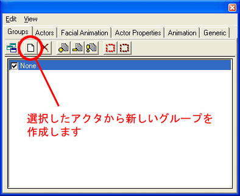
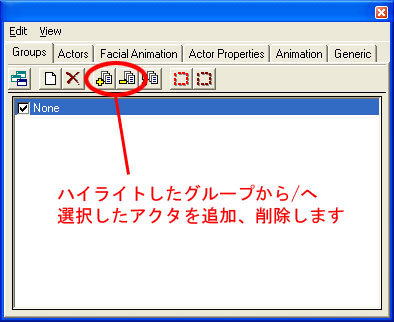
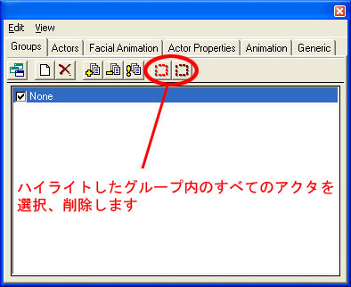

UDN
Search public documentation:
GroupsBrowserReferenceJP
中国翻译
한국어
Interested in the Unreal Engine?
Visit the Unreal Technology site.
Looking for jobs and company info?
Check out the Epic games site.
Questions about support via UDN?
Contact the UDN Staff
한국어
Interested in the Unreal Engine?
Visit the Unreal Technology site.
Looking for jobs and company info?
Check out the Epic games site.
Questions about support via UDN?
Contact the UDN Staff
Groups (グループ) ブラウザ
ドキュメントの概要:Unreal Editor にあるグループブラウザへの参照。 ドキュメントの変更ログ: Jason Lentz (DemiurgeStudios?) により作成。 Chris Sturgill (DemiurgeStudios?) により更新。 Richard Nalezynski? により維持。はじめに
Groupsブラウザはレベルにあるアクタを編成できるようにします。 このブラウザには強力な用途が2つありますが(アクタの非表示と選択)、それらはよく編成されている場合にのみよく機能します。 このブラウザは、ジオメトリを離れていくシーンや作業しているアクタののクラッタをすばやく削除することに使用できます。例えば、モジュラー部分から成っている、複数のレベルを持つ建物について作業しているとします。各フロアをグループに割り当てることにより、上面図の作業をしていない各フロアを非常ににすることができます。 また、グループ内に必要な数だけアクタを含むことができます。これは、オーバーラップしているグループ下で異なるアクタのセットがある場合役に立ちます。例として、ゾーンにすべてを割り当てることでグループを編成することができ、レベル内ですべてのドアからなるグループを持つことができます。 大きいレベルを作成時、グループ使用のコストを上げればあげるほどより作業がしやすくなります。また、レベルの作成がかなり進んでしまってからよりも、初めからグループを使用したほうがより簡単だということを覚えておいてください。Groupsブラウザ概要
グループブラウザレイアウト
メニューバー
編集
- New... - 新規のGroupを作成する。
- Rename - 選択しているグループの名前を変更する。
- Delete - Groupリストから現在選択しているGroupを削除する。
- Add Selected Actors to Group(s) - 現在選択しているグループにアクタを追加する。
- Delete Selected Actors from Group(s) - - 現在選択しているGroupsからアクタを削除する。
- Refresh Group List - グループリストのリフレッシュを強制する。
- Select Actors - 現在のグループにあるアクタを選択する。
- Deselect Actors - 現在のGroupにあるアクタを非選択する。
- Make All Groups Visible - すべてのGroupsを可視にする。
ビュー
- *Refresh グループリストをリフレッシュする。
ツールバー
- New Group (新規グループ)
- Add (追加)
- Remove (削除)
- Select Actors (アクタの選択)
グループリスト
最初に、レベルに追加したものすべてはデフォルトの None グループに配置されます。アクタを追加するほど、グループがさらに作成され、リストに表示されます。 隣接している各グループはチェックボックスです。これがチェックされると、グループにあるアクタは可視になりますが、そうでない場合は不可視になっています。 グループを [Ctrl] クリックまたは [Shit] クリックをすることにより、複数のグループを選択することが可能です。アクタを複製時、新しいアクタはペアレントアクタがあるグループに残ることに注意してください。このため、Groupsブラウザをセットアップが容易になるよう、作成しだい直ちにアクタを配置し始めたほうがよろしいでしょう。グループでの作業
新規グループの作成
新しいグループを作成するには、まず、グループに含みたい1つまたはすべてのアクタを選択します。次に、Group ブラウザの上部で、 New Group ボタンをクリックします。
ウィンドウがポップアップするのでグループ名をつけます。このグループにあるアクタは現在2つのグループに属します。たった今作成したものとデフォルトグループ None です。Groupsからの追加と削除
グループにアクタを追加するには、グループに含みたいアクタを選択し、Groups ブラウザのグループを選択し Add ボタンを押します。また、アクタを削除するには同じプロセスをし、 Remove ボタンを押します。
グループによるアクタの選択
グループ使用において役に立つもう1つの機能とは、特定のグループのアクタを選択するためにそれを使うことができることです。StaticMeshという1つのツリーのみ用のツリーのフィールドを持つと思われますが、最終的には3つのツリータイプを持つことになります。また、1つのツリーを使いレベル全体にわたりプロパゲートすることができますが、異なるグループ内にツリーの特定のセットを割り当てます。後に、グループ名をクリックしグループを戻ったり、選択することができ、"Select Actors"ボタン(下記に表示)をクリックし、一度にStaticMesh プロパティを変更します。